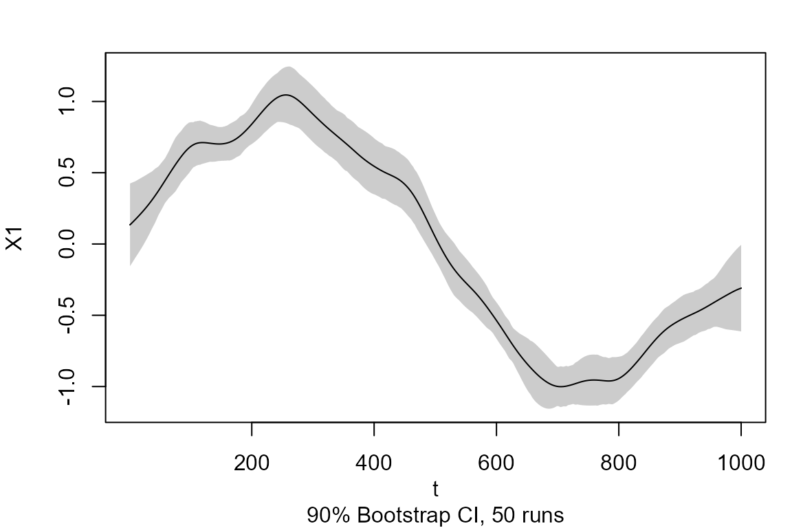
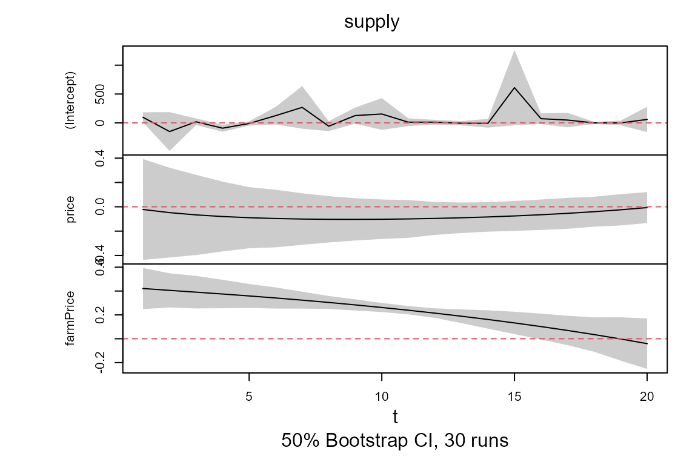
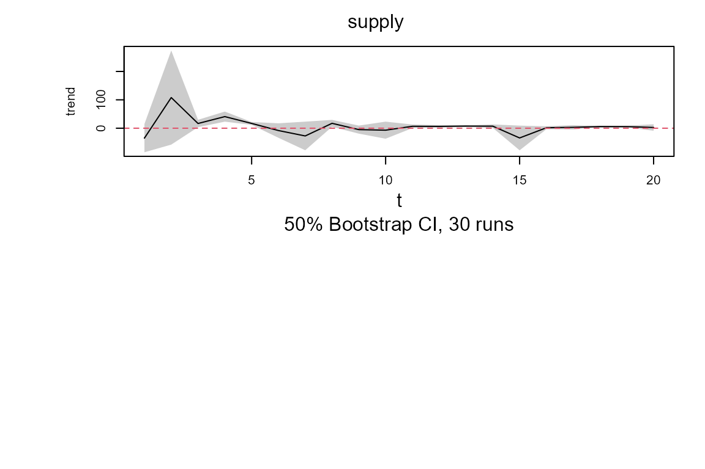
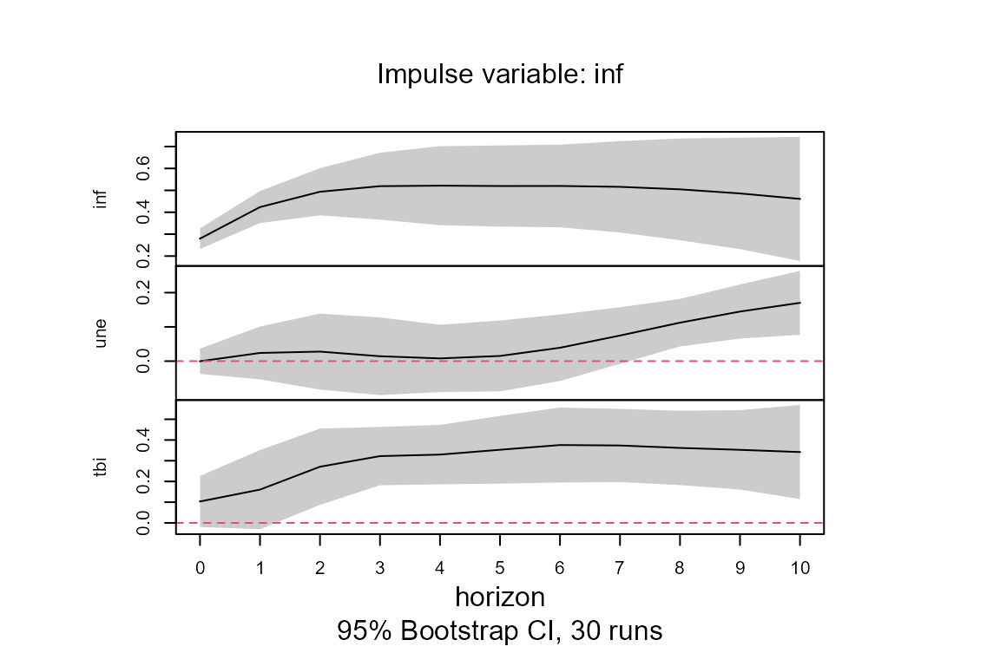
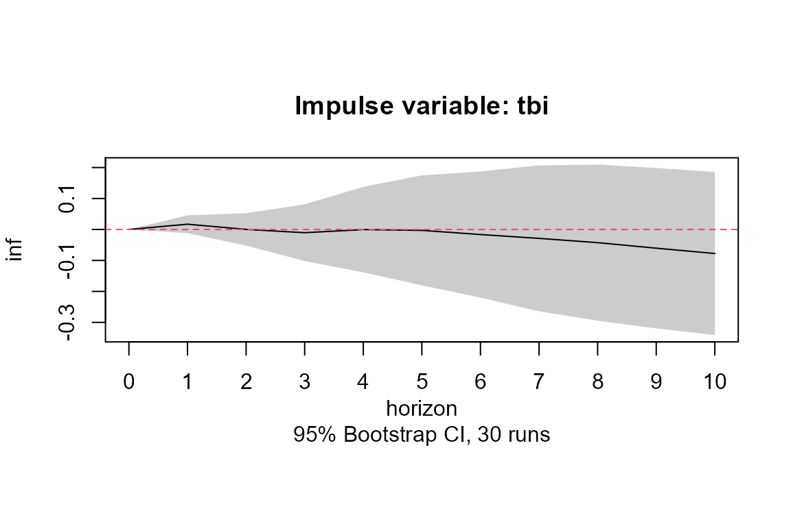

tvReg: Time-Varying Coefficient Linear Regression for Single and Multi-Equations in R
Isabel Casas
The University of Southern Denmark.Ruben Fernandez-Casal
University of A Coruna2019-04-03
Source:vignettes/tvReg.Rmd
tvReg.RmdAbstract
The source code of the tvReg package is publicly available for download from the Comprehensive R Archive Network (CRAN, https://CRAN.R-project.org/). The five basic functions in this package are tvLM, tvAR, tvSURE, tvVAR and tvIRF. Moreover, this package provides the confint, fitted, forecast, plot, predict, print, resid and summary methods adapted to the class attributes of the tvReg. In addition, it includes a bandwidth selection method, a time-varying variance-covariance estimator and two estimation procedures: the time-varying ordinary least squares, which is implemented in the tvOLS method and the time-varying generalised least squares, which is implemented in the tvGLS method.Single equation models: the TV-LM and TV-AR
The general formula of these models is: \[ y_t = X_t' \beta_t + u_t, \hspace{0.3cm} t = 1, \ldots, T \ \ \ (1) \] where \(X_t = (X_{0t}, X_{1t}, \ldots, X_{dt})'\) and \(\beta_t = (\beta_{0t}, \beta_{1t}, \ldots, \beta_{dt})'\) are vectors and \(u_t\) is a random variable. When \(X_t\) contains lags of \(y_t\) then we have the time-varying coefficients AR model (TV-AR) which is fitted by function tvAR. When \(X_t\) contains only exogenous variables, then the model is denoted by TV-LM and it is fitted by function tvLM.
Standard usage of tvLM
Function tvLM fits a TV-LM to the data using the tvOLS method in the estimation. The only mandatory argument is formula which should be a single formula for a single equation model. This formula follows the standard regression formula in R (see documentation of formula). An object of the class attribute tvlm is returned.
The following example demonstrates the functionality of tvLM on generated data and compares it with the lm estimation. The latter assumes that the model coefficients are constant. The data generating process of the example below has time-varying coefficients and therefore its estimation with function lm will only find a central value of the time-varying coefficients.
We want to estimate the following model: \[ y_t = \beta_{1t} X_{1t}+ \beta_{2t} X_{2t} + u_t, \ \ t = 1, \ldots, T, \] where the coefficients are functions of a rescaled time period \(\tau = t/T\) with \(T = 1000\). In particular, \(\beta_{1t}= \sin(2\pi\tau)\) and \(\beta_{2t} = 2\tau\). The regressors, \(X_{1t} \sim N(0, 1)\) and \(X_{2t} \sim \chi^2(4)\), are independent of the error term, \(u_t \sim t(10)\).
## Simulate a linear process with time-varying coefficient as functions of
## rescaled time period.
library(tvReg)
tau <- seq(1:1000)/1000
beta <- data.frame(beta1 = sin(2 * pi * tau), beta2 = 2 * tau)
X1 <- rnorm(1000)
X2 <- rchisq(1000, df = 4)
error <- rt(1000, df = 10)
y <- apply(cbind(X1, X2) * beta, 1, sum) + error
data <- data.frame(y = y, X1 = X1, X2 = X2)
## Estimate coefficients with lm and tvLM for comparison
coef.lm <- stats::lm(y ~ 0 + X1 + X2, data = data)$coef
model.tvLM <- tvLM(y ~ 0 + X1 + X2, data = data)## Calculating regression bandwidth...## Plot the estimates of beta1
par(mar = c(4, 4, 1, 1), oma = c(1, 1, 1, 1))
plot(tau, beta[, 1], type = "l", main = "", ylab = expression(beta[1]), xlab = expression(tau),
ylim = range(beta[, 1], model.tvLM$tvcoef[, 1]))
abline(h = coef.lm[1], col = 2)
lines(tau, model.tvLM$tvcoef[, 1], col = 4)
legend("topright", c(expression(beta[1]), "lm", "tvlm"), col = c(1, 2, 4), bty = "n",
lty = 1, cex = 0.8)
The first line loads the tvReg package. Then data is simulated and a data frame is created with the dependent variable and the regressors. Estimations of this model are obtained with the lm and the tvLM functions for comparison. As we see in the plot, the estimation assuming a constant \(\beta_{1t}\) lays in the middle of all the values of \(\beta_{1t}\), while the estimation assuming time-varying coefficients is more accurate and closer to the true values.
Package tvReg calculates the confidence intervals the class attributes tvlm, tvar, tvsure and tvirf with the confint method. The argument level is set to 0.95 (95% confidence interval) by default. If this argument is chosen to be a number between 0 and 1, then a number of runs resamples is used in the confidence interval calculation. Because coefficients are time-varying, only wild bootstrap residual resampling is possible. Two choices of wildbootstrap are available in argument tboot, the Mammen (1993) (default) and the one using the normal distribution (tboot =“wild2”).
Note that the input model in the confint method has already confidence intervals, the calculation of another confidence interval will be faster as the results from replications are stored in variable BOOT. Below the code to calculate the 90% and 95% coefficient confidence intervals for the model.tvLM.
## Obtain the 90% confidence interval of the coefficients for an object of
## the class attribute tvlm
model.tvLM.90 <- confint(model.tvLM, level = 0.9, runs = 50)
## Obtain the 95% confidence interval of the same object. This will reused
## the resamples of object model.tvLM.90. So the second confidence interval
## calculation is faster
model.tvLM.95 <- confint(model.tvLM.90)There is a plot method for objects of the five class attributes in this package. The variable coefficients estimates, as well as if confidence intervals if calculated, are plotted for the class attributes tvlm, tvar, tvsure and tvirf. The fitted values and the residuals are plotted for the class attribute tvvar because the interpretation of its coefficients is not relevant. Below the plot of model.tvLM.90.
## Plot coefficient estimates and confidence intervals (if calculated) of
## objects of the class attribute tvlm
plot(model.tvLM.90)
User options of tvLM
The user can provide additional optional arguments to modify the default estimation. All optional arguments are described below:
Smoothing random variable
tvLM assumes by default that model coefficients are unknown functions of rescaled time, \(\tau = t/T\) and therefore argument z is set to NULL by default. The user can modify this setting by entering a numeric vector in argument z with the values of the random smoothing variable over the corresponding time period. The example below shows this functionality with generated data. The example generating process of function arima.sim from package stats is used in the example.
## Data generation
set.seed(42)
z <- stats::arima.sim(n = 1000, list(ar = c(0.8897, -0.4858), ma = c(-0.2279,
0.2488)), sd = sqrt(0.1796))
beta <- data.frame(beta1 = sin(2 * pi * z), beta2 = 2 * z)
y <- apply(cbind(X1, X2) * beta, 1, sum) + error
data <- data.frame(y = y, X1 = X1, X2 = X2, z = z)
## Coefficients estimation
coef.lm <- stats::lm(y ~ 0 + X1 + X2, data = data)$coef
model.tvLM2 <- tvLM(y ~ 0 + X1 + X2, z = z, data = data, bw = 0.4, est = "ll")
## Plotting the estimates of beta1
sort.index <- sort.int(z, index.return = TRUE)$ix
par(mar = c(4, 4, 1, 1), oma = c(1, 1, 1, 1))
plot(z[sort.index], beta[sort.index, 1], type = "l", main = "", ylab = expression(beta[1]),
xlab = expression(z[t]), ylim = range(beta[, 1], model.tvLM2$tvcoef[, 1]))
abline(h = coef.lm[1], col = 2)
lines(z[sort.index], model.tvLM2$tvcoef[sort.index, 1], col = 4)
legend("top", c(expression(beta[1]), "lm", "tvLM"), col = c(1, 2, 4), bty = "n",
lty = 1, cex = 0.5)
As expected, the coefficient estimate from lm falls around the mean of all \(\beta_{1t}\). While the tvLM estimates follow the true process closely. Note that if the bandwidth was very large, then the two estimates would be very similar.
Data
Argument data can be used to specify the data frame or matrix with the model variables. If it is not specified, the function searches variables in the global environment or the one attached to the search path.
Bandwidth
When argument bw is set to NULL in tvLM, it is automatically selected by leave-one-out cross-validation. This minimisation can be a bit slow for large datasets, and it should be avoided if the user knows the value of the bandwidth for the required problem. The user can enter values in bw to obtain undersmoothed or oversmoothed estimates as needed. As we can see in the previous example, the bandwidth was chosen to 0.4 by the user.
Kernel type
The two choices for this argument are tkernel = “Epa” (default) and tkernel =“Gaussian”. The former refers to the Epanechnikov kernel, which is compact in [-1, 1]. The authors do not recommend the use of the Gaussian kernel because in general, it requires more calculations and it is slower.
Estimation methodology
The default estimation methodology is the Nadaraya-Watson or local constant, which is set as (est = “lc”) and it fits a constant at each interval defined by the bandwidth. The argument est = “ll” can be chosen to perform a local linear estimation (i.e., to fit a polynomial of order 1).
Standard usage of tvAR
A TV-AR model is a special case of TV-LM in which regressors contain lagged variables of the dependent variable, y. The number of lags included depend on the model order p. Other exogenous variables may be included in the model using argument exogen. An intercept is included by default unless the user enters type= “none” into the function call. Econometrically, this function also wraps estimator tvOLS which needs a bandwidth bw that is automatically selected by the leave-one-out cross-validation when the user does not enter any number. An object of the class attribute tvar is returned.
The following examples demonstrates the functionality of tvAR on generated data, and compares it with the output of the ar.ols method from the stats package. Specifically, the following TV-AR(2) process is considered,
\[ y_t = \beta_{1t} y_{t-1}+ \beta_{2t} y_{t-2} + u_t, \ \ t = 1, \ldots, T, \] with coefficients \(\beta_{1t} = 0.5 \cos(2\pi \tau)\) and \(\beta_{2t} = (\tau -0.5)^2\), where \(\tau = t/T\), and standard normal errors. A random proces of 1000 points is generated, but only the last 500 are used in the estimation to remove the dependency on the initial values.
## Simulate an tvAR(2) process
tt <- (1:1000)/1000
beta <- cbind(0.5 * cos(2 * pi * tt), (tt - 0.5)^2)
y <- numeric(1000)
y[1] <- 0.5
y[2] <- -0.2
## y(t) = beta1(t) y(t-1) + beta2(t) y(t-2) + ut
for (t in 3:1000) {
y[t] <- y[(t - 1):(t - 2)] %*% beta[t, ] + rnorm(1)
}
Y <- tail(y, 500)
## Coefficient estimates of process Y with ar.ols and tvAR
model.ar.2p <- ar.ols(Y, aic = FALSE, order = 2, intercept = FALSE, demean = FALSE)
model.tvAR.2p <- tvAR(Y, p = 2, type = "none", est = "ll")## Calculating regression bandwidth...The smoothing variable in the chunk above is time. The lines of code below show an example of a TV-AR(1) process whose coefficient is a function of a uniform random variable in [-1, 1]. In particular, \(\beta_{1t} = (z_t -0.5)^2\). It also calculates the coefficient 80% confidence interval and plot the estimates.
## Simulate a AR(1) process with coefficients depending on z
z <- runif(2000, -1, 1)
beta <- (z - 0.5)^2
y <- numeric(2000)
y[1] <- 0.5
error <- rnorm(2000)
## y(t) = beta1(z(t)) y(t-1) + ut
for (t in 2:2000) {
y[t] <- y[(t - 1)] %*% beta[t] + error[t]
}
## Remove initial conditions effects
Z <- tail(z, 1500)
Y <- tail(y, 1500)
## Coefficient estimates of process Y with ar.ols and tvAR
model.ar.1p <- ar.ols(Y, aic = FALSE, order = 1, intercept = FALSE, demean = FALSE)
model.tvAR.1p.z <- tvAR(Y, p = 1, z = Z, type = "none", est = "ll")## Calculating regression bandwidth...## 80% confidence interval using normal wild bootstrap for object of the
## class attribute tvar with 200 bootstrap resamples
model.tvAR.80 <- confint(model.tvAR.1p.z, tboot = "wild2", level = 0.8, runs = 50)
## Plot coefficient estimates of objects of the class attribute tvar.
plot(model.tvAR.80)
The print method only displays the mean of the coeffient estimates over time and the mean of their confidence interval, if calculated. The summary method displays a summary of all coefficient values over the whole time period. It also prints a pseudo-R2 for the class attributes tvlm, tvar, tvsure and tvvar. See how it works below.
## Summary of model.tvAR.80
summary(model.tvAR.80)##
## Call:
## NULL
##
## Class: tvlm
##
## Summary of time-varying estimated coefficients:
## ================================================
## y.l1
## Min. -0.008232
## 1st Qu. 0.064267
## Median 0.258089
## Mean 0.570742
## 3rd Qu. 0.896421
## Max. 2.356847
##
## LOWER (80%) confidence interval:
## y.l1
## Min. -0.06139
## 1st Qu. -0.01042
## Median 0.17213
## Mean 0.49892
## 3rd Qu. 0.82595
## Max. 2.22137
## y.l1
## Min. 0.03958
## 1st Qu. 0.12565
## Median 0.34582
## Mean 0.64257
## 3rd Qu. 0.96689
## Max. 2.49258
##
## Bandwidth: 0.5358
## Pseudo R-squared: 0.6168## Print of model.tvAR.80
print(model.tvAR.80)##
## Class: tvar
##
## Mean of coefficient estimates:
## ===============================
## y.l1
## 0.5707
##
## LOWER (80%):
## y.l1
## 0.4989
##
## UPPER (80%):
## y.l1
## 0.6426
##
## Bandwidth: 0.5358User options of tvAR
The user can provide additional optional arguments to modify the default estimation. See section ‘User options of tvLM’ to understand the usage of arguments bw, est, tkernel and singular.ok. In addition, the tvAR has the following arguments:
Type
The default model contains an intercept (i.e., it has a mean different from zero). The user can set argument type = “none”, so the model has mean zero.
Autoregressive model with coefficent restrictions
An autoregressive process of order p does not necessarily contain all the previous p-lags of \(y_t\). Argument fixed, with the same format as in the function arima from the package stats, permits to impose these restrictions. The order of variables in the model is: intercept (if any), lag 1, lag 2, \(\ldots\), lag p and exogenous variable (if any). By default, the argument fixed is a vector of NAs with length the number of coefficients in the model. The user can enter a vector in the argument fixed with zeros in the positions corresponding to the restricted coefficients.
The example below uses the simulated variable Y from above and fits a TV-AR(6), but only the first, third and sixth lags are considered in the model, the model has an intercept and there are no exogenous variables.
Multi-equation linear models: the TV-SURE and TV-VAR models
The formula of systems of linear models can be generally express as in (1) with \(y_t = (y_{1t}, y_{2t}, \ldots, y_{Mt})'\) for \(M\) the number of equations in the system. Similarly, the error term \(u_t =(u_{1t}, u_{2t}, \ldots, u_{Mt})'\) and the \(\Sigma_t\) is the variance-covariance matrix that defines the dependency of the error terms of all equations. Variables \(X_t\) and \(\beta_t\) are matrices.
Regarding systems of equations, the tvSURE function fits a time-varying seemingly unrelated equations models. Its main argument is formula which is a list of objects of the class attribute formula, one formula for each equation. Equations may have a different number of regressors and these do not have to be the same.
Another multi-equation model included in the package is the time-varying vector autoregressive in function tvVAR whose main arguments are a matrix of dependent variables y and the number of lags p. It returns an object of the class attribute tvvar. Coefficients of the tvVAR are not interpretable, instead the time-varying coefficients impulse response function is coded in function tvIRF. The latter takes an object of the class attribute tvvar and returns an object of the class attribute tvirf.
Standard usage of the tvSURE
A time-varying coefficients SURE model is a multi-equation where the regressors are exogenous variables. The main argument of this function is a list of formulas, one for each equation. The formula format is inpired in the formula from package systemfit which estimates parametric multi-equation problems with constant coefficients. An object of the class attribute tvsure is returned by the main function tvSURE.
The examples below use the dataset Kmenta from package systemfit to illustrate a demand/supply problem using different models. This problem has two equations: i) a demand equation, which explains how food consumption per capita, consump, depends on the ratio of food price, price; and disposable income, income; and ii) a supply equation, which shows how consumption depends on price, ratio prices received by farmers to general consumer prices, farmPrice; and a possible time trend, trend. Mathematically, this SURE model is
\[\begin{align} consump_t = &\beta_{10} + \beta_{11} price_t + \beta_{12} income_t + u_{1t}\nonumber\\ consump_t = &\beta_{20} + \beta_{21} price_t+ \beta_{22} farmPrice_t +\beta_{23} t+ u_{2t}. \label{eq:Kmenta} \end{align}\]The estimation of this multi-equation problem can be done equation by equation, assuming no correlation in the error variance-covariance matrix, or as a system where the information in this matrix is used. Regressors can be different for each equation. An intercept is included by default in each equation unless its formula states it differently. Function tvSURE is a wrapper of the two estimation procedures. Estimator tvOLS is used by default, calculating estimates for each equation independently with different bandwidths bw. The user is able to enter a set of bandwidths or a single bandwidth to be used in the estimation instead. In addition, estimator tvGLS is used when equations are assumed to be related by the variance-covariance matrix of the error. In addition, confidence intervals of the estimates can be calculated. Results can be plotted and summarise.
data("Kmenta", package = "systemfit")
eqDemand <- consump ~ price + income
eqSupply <- consump ~ price + farmPrice + trend
system <- list(demand = eqDemand, supply = eqSupply)
## OLS estimation of a system
model.ols <- systemfit::systemfit(system, method = "OLS", data = Kmenta)
## tvOLS estimation of a system with the local linear estimator
model.tvOLS <- tvSURE(system, data = Kmenta, est = "ll")## Calculating regression bandwidth...## 50% confidence interval using Mammen's wild bootstrap for object of the
## class attribute tvsure
model.tvOLS <- confint(model.tvOLS, level = 0.5, runs = 30)
## Plot coefficient estimates and confidence intervals (if calculated) of
## objects of the class attribute tvsure
plot(model.tvOLS)
## Print of model model.tvOLS
print(model.tvOLS)##
## Class: tvsure
##
## Mean of TV-SURE coefficient estimates for equation "demand":
## =============================================================
## (Intercept).demand price.demand income.demand
## 108.0830 -0.4338 0.3705
##
## Bandwidth: 1.5
##
##
## Mean of TV-SURE coefficient estimates for equation "supply":
## =============================================================
## (Intercept).supply price.supply farmPrice.supply
## -40.78078 0.29243 0.07264
## trend.supply
## 110.46391
##
## Bandwidth: 1.8User options of tvSURE
The user can provide additional optional arguments to modify the default estimation. Refer to section ‘User options of tvLM’ to understand the usage of arguments z, data, bw, est, tkernel and singular.ok. Note that the current version only allows one single random variable z for all equations. The tvSURE function wraps estimators tvOLS and tvGLS.
Choosing the estimation method
This argument defines the type of estimation to be performed. The possible choices in argument method are:
“tvOLS” for a line by line estimation, meaning that the error variance-covariance matrix, \(\Sigma\), is the identity matrix.
“tvGLS” to estimate the coefficients of the system using \(\Sigma_t\), for which the user must enter it in argument Sigma. Argument Sigma takes either a symmetric matrix or an array. If \(\Sigma\) is a matrix (constant over time), then it must have dimensions neq \(\times\) neq, where neq is the number of equations in the system. If \(\Sigma_t\) is considered to change with time, then argument Sigma is an array of dimension neq \(\times\) neq \(\times\) obs, where the last dimension measures the number of time observations. Note that if the user enters a diagonal variance-covariance matrix with diagonal values different from one, then a time-varying weighted least squares is performed. If method = “tvGLS” is entered but Sigma = NULL, then tvSURE is fitted as if and a warning is issued.
“tvFGLS” to estimate the coefficients of the system using an estimated time-varying variance-covariance matrix. By default, only one iteration is performed in the estimation of \(\Sigma\), unless control indicates otherwise. The user can choose the maximum number of iterations or the level of tolerance in the estimation of \(\Sigma\).
The lines of code below illustrate the use of arguments method and control and compares it with the usage of these arguments in function systemfit.
## FGLS estimation - SURE estimation
fgls1.fit <- systemfit::systemfit(system, data = Kmenta, method = "SUR")
## tvFGLS estimation - tvSURE estimation
tvfgls1.fit <- tvSURE(system, data = Kmenta, method = "tvFGLS")## Calculating regression bandwidth...
## Calculating variance-covariance estimation bandwidth...## Iterative FGLS estimation - SUR estimation
fgls2.fit <- systemfit::systemfit(system, data = Kmenta, method = "SUR", maxit = 100)
## Iterative tvFGLS estimation - SURE estimation using the local linear
tvfgls2.fit <- tvSURE(system, data = Kmenta, method = "tvFGLS", control = list(tol = 0.001,
maxiter = 100))## Calculating regression bandwidth...
## Calculating variance-covariance estimation bandwidth...Coefficient restrictions
The user can restrict certain coefficients using arguments R and r. Note that the restriction is setting those coefficients to a constant. Restrictions can aid statistical inference to test certain conditions. Matrix R has as many rows as restrictions in r and as many columns as regressors in the model. In this case, Model () has 7 coefficients which are ordered as they appear in the list of formulas. Note that the time-varying coefficient of the variable trend is redundant when an intercept is included in the second equation of the TV-SURE. Therefore, we want to restrict its coefficient two zero. We would also like to impose \(\beta_{11, t} - \beta_{21, t} = 0.5\):
\[ \left(\begin{array}{ccccccc} 0 &0& 0&0&0&0&1\\ 0&1&0&0&1&0&0 \end{array}\right) \left(\begin{array}{c} \beta_{10, t} \\ \beta_{11,t} \\\beta_{12, t}\\\beta_{20,t} \\\beta_{21, t} \\\beta_{22,t} \\ \beta_{23, t} \\ \end{array}\right) = \left(\begin{array}{c} 0 \\0.5 \end{array}\right) \]
This is done with the as follows:
Standard usage of tvVAR and tvIRF
A time-varying coefficients vector autoregressive (TV-VAR) model is a system of TV-AR models. The dependent variable, y, is a matrix with as many columns as equations. Regressors are often the same for each equation and they consist of the lagged values of y, where the number of lags is given in argument p; an intercept if argument type=“const” and other exogenous variables entered in argument exogen. Econometrically, the tvOLS is called to calculate the estimates for each equation independently using one bandwidth per equation. The user can enter a single scalar in bw or a vector of scalars, one bandwidth for each equation. If bw = NULL, one bandwidth for each equation is selected by the leave-one-out cross-validation.
As in the other models, the kernel and the estimation methodology can be chosen in arguments tkernel and est. The return is an object of the class attribute tvvar which can be used to estimate the time-varying impulse response function with function tvIRF. The smoothing variable is time by default, but another random variable can be used by entering it in argument z.
Example below uses the macroeconomic data from Primiceri (2005). Three variables are included in dataset usmacro from package bvarsv: inflation rate (inf), unemployment rate (une) and treasury bill interest rate (tbi) for the United States. The mathematical model under study follows the expression of a TV-VAR(4):
\[ \text{inf}_t = a_{t}^1 +\sum_{i=1}^4 b_{it}^ 1 \ \text{inf}_{t-i} +\sum_{i=1}^4 c_{it}^1 \ \text{une}_{t-i} +\sum_{i=1}^4 d_{it}^1\ \text{tbi}_{t-i} +u _{t}^1 \]
\[ \text{une}_t = a_{t}^2 +\sum_{i=1}^4 b_{it}^ 2 \ \text{inf}_{t-i} +\sum_{i=1}^4 c_{it}^2 \ \text{une}_{t-i} +\sum_{i=1}^4 d_{it}^2 \ \text{tbi}_{t-i} +u _{t}^2 \]
\[ \text{tbi}_t = a_{t}^3 +\sum_{i=1}^4 b_{it}^ 3 \ \text{inf}_{t-i} +\sum_{i=1}^4 c_{it}^3 \ \text{une}_{t-i} +\sum_{i=1}^4 d_{it}^3\ \text{tbi}_{t-i} +u _{t}^3. \]
A constant coefficients VAR(4) is estimated using function VAR from package vars and a TV-VAR(4) is estimated with tvVAR.
## Inflation rate, unemployment rate and treasury bill interest rate for the
## US, as used by Primiceri (2005).
data(usmacro, package = "bvarsv")
model.VAR <- vars::VAR(usmacro, p = 4, type = "const")
model.tvVAR <- tvVAR(usmacro, p = 4, type = "const")## Calculating regression bandwidths...## Plot the fitted values and residuals of each equation in the model
plot(model.tvVAR)

The user can provide additional optional arguments to modify the default estimation. Refer to section ‘User options of tvAR’ to understand the usage of arguments p, z, bw, type, exogen, est, tkernel and singular.ok. Note that the current version only allows one single random variable z, the same for every equation. The tvVAR model wraps estimator tvOLS. At the moment all equations are estimated as if there were independent, i.e. line by line. The variance-covariance matrix in the residuals can be used to calculate the orthogonal time-varying IRF.
User options of tvIRF
The main argument x is an object of the class attribute tvvar obtained from function tvVAR. The user can provide additional optional arguments to modify the default estimation.
Impulse and response variables
The user has the option to pick a subset of impulse variables and/or response variables using arguments impulse and response.
Horizon
The horizon of the TV-IRF coefficients can be chosen by the user with argument n.ahead, the default is 10.
Orthogonal TV-IRF
The tvIRF calculates one impulse response function for each point in time. It is likely that the errors variance-covariance matrix of a process with time-varying coefficients is also time-varying. Those, the default of argument ortho.cov = “tv”. Note that the user can enter a value of the bandwidth for the covariance matrix estimation in bw.cov. This function calls function tvCov in the calculation of the MA (\(\infty\)) coefficients. It is possible to use a constant variance-covariance matrix by setting ortho.cov = “const”.
The chunk below shows how to obtain the IRF and TV-IRF from the previous monetary policy example.
## Estimate a the impulse response functions with irf and tvIRF from previous
## vector autoregressive models
model.irf <- vars::irf(model.VAR)
model.tvIRF <- tvIRF(model.tvVAR)
## 95% confidence interval using Mammen's wild bootstrap for object of the
## class attribute tvirf
model.tvIRF <- confint(model.tvIRF, runs = 30)Note that there is one IRF for each point in time. The plot method of class attribute tvirf displays the mean value of all the IRF over all the time period. However, if the user desires to plot the TV-IRF of a particular time, for example value 100 as below, then it is entered in the argument obs.index. This plot method also permits to choose a particular response and impulse variables.
## Plot the mean all tvIRF over time
plot(model.tvIRF)##
## The plot represents the mean of tvIRF over every time period.
## Enter the row number in parameter "obs.index" to plot the tvIRF
## of a particular point in time.
## Plot the effect of a shock in the interest rates (tbi) on the inflation
## (inf) at time 100
plot(model.tvIRF, obs.index = 100, impulse = "tbi", response = "inf")
Cumulative TV-IRF
If the user desires to obtain the cumulative TV-IRF values, then argument cumulative must be set to TRUE. See example below.
## Estimate a the tvIRF with time-varying covariance function
model.tvIRF2 <- tvIRF(model.tvVAR, cumulative = TRUE)
## Plot the cumulative effect on a shock in short term interest rates (tbi)
## on the inflation (inf)
plot <- plot(model.tvIRF2, impulse = "tbi", response = "inf")##
## The plot represents the mean of tvIRF over every time period.
## Enter the row number in parameter "obs.index" to plot the tvIRF
## of a particular point in time.
Estimating a time-varying variance-covariance matrix
A time-varying covariance matrix of two or more series can be estimated using function tvCov as in the example below. This is the function used by the tvSURE and tvIRF functions to estimate a time-varying variance-covariance matrix of the error term. The lines of code below illustrate its use.
library(MASS)
## Generate two independent (uncorrelated) series
y <- cbind(rnorm(200, sd = 4), rnorm(200, sd = 1))
## Calculate the bandwidth
bw.cov <- bwCov(y)
## Estimate variance-variance matrix
Sigma.hat <- tvCov(y, bw = bw.cov)
## The first time point estimate
print(Sigma.hat[, , 1])## [,1] [,2]
## [1,] 16.8399011 0.2118488
## [2,] 0.2118488 1.1359647## [,1] [,2]
## [1,] 16.8387330 0.2121967
## [2,] 0.2121967 1.1359955## Generate two dependent variables with a covariance of -0.5
y <- mvrnorm(n = 200, mu = c(0, 0), Sigma = cbind(c(1, -0.5), c(-0.5, 4)))
## Calculate the bandwidth
bw.cov <- bwCov(y)
## Estimation the variables variance-covariance matrix
Sigma.hat <- tvCov(y, bw = bw.cov)
## The first time point estimate
print(Sigma.hat[, , 1])## [,1] [,2]
## [1,] 0.8947669 -0.3850036
## [2,] -0.3850036 3.9702421Prediction and forecast in time-varying coefficient models
Estimation is an useful tool to understand the patterns and processes hidden in known data. Prediction and forecasting are the mechanisms to extend this understanding to unknown data.
In a classical linear model, the prediction of the dependent variable at time \(T+h\) is \(\hat y_{T+h} = x_{T+h}^\top \hat \beta\) for \(h\ge 1\). All predictors, \(x_{T+h}\), are known.
In autoregressive models, the prediction of future values has a slightly different nature and it is commonly referred to as forecast. The predictors (regressors) in the 1-step-ahead forecast are known, but they are unknown for longer horizons. For example, given \(y_t = 5 - 0.5 y_{t-1} + u_t\) for \(t = 1, \ldots, T\), the 1-step-ahead forecast is \(\hat y_{T+1} = 5 -0.5 y_{T}\) with known \(y_T\). However, the 2-step-ahead forecast is \(\hat y_{T+2} = 5 - 0.5 \hat y_{T+1}\) with the previously forecasted \(\hat y_{T+1}\) as predictor, which means a larger uncertainty in the forecast error. This means a greater uncertainty in the forecast error as the forecast horizon increases.
In our the time-varying coefficient models, we refer to prediction when the smoothing variable, \(z_t\), is a random variable and to forecast when \(z_t = \tau\). Thus, the predict and forecast methods in tvReg are slightly different.
Usage of prediction and forecast in tvReg
The forecast method is implemented for the class attributes tvlm, tvar, tvvar and tvsure. As an example, the three days ahead forecast of model tvHAR, which is an extension of the HAR model of Corsi (2008) to allow for time-varying coefficients. This is a TV-AR(1) model with two exogenous variables: an average of a weekly realized variance and an average of a monthly week variance. The argument newexogen needs three values for time points 2002, 2003 and 2004 and variable n.ahead is set to three.
data(RV)
RV2 <- head(RV, 2001)
## Estimate/train tvHAR model
tvHAR <- with(RV2, tvAR(RV, p = 1, bw = 20, exogen = cbind(RV_week, RV_month)))
## Define the forecast horizon (n.ahead) and the future values of the
## exogenous variables
newexogen <- cbind(RV$RV_week[2002:2004], RV$RV_month[2002:2004])
## 3-step-ahead forecast
forecast(tvHAR, n.ahead = 3, newexogen)## [1] 2.529043e-05 2.457955e-05 2.289168e-05The forecast method main arguments are object and n.ahead. The latter is a scalar with the forecast horizon. Depending on the class attribute, further arguments may be necessary.
Type of forecast
It is possible to run either an increase window forecast (default), when argument winsize = 0 or a rolling window forecast with a window size as long as it is defined in argument winsize.
newx, newdata
These are arguments in the forecast method for class attributes tvlm and tvsure, respectively. They should contain new values of the regressors and have class attributes vector, data.frame or matrix. It is not necessary to enter the intercept.
newexogen
This argument appears in the forecast method for the class attributes tvar and tvvar and it must be entered when the initial model contains exogen variables. It is a vector, data.frame or matrix.
The predict method is implemented for the same four class attribues than the forecast method. It does not require the n.ahead or winsize arguments, but the other arguments are the same. In addition, new values of the smoothing variable must be entered into the argument newz. This is a numeric vector. The code below shows how to predict three future values of the tvHARQ model fitted above. The tvHARQ model has the same variables than the tvHAR model but the coefficients are unknown function of the past realized quarticity.
tvHARQ <- with(RV2, tvLM(RV ~ RV_lag + RV_week + RV_month, z = RQ_lag_sqrt,
bw = 0.006))
newx <- cbind(RV$RV_lag[2002:2004], RV$RV_week[2002:2004], RV$RV_month[2002:2004])
newz <- RV$RQ_lag_sqrt[2002:2004]
predict(tvHARQ, newx, newz)## [1] 2.407101e-05 2.095129e-05 2.328338e-05The predict method for the rest of the class attributes in the package follow similar patterns and further examples can be found in the documentation of the package.